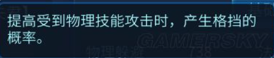
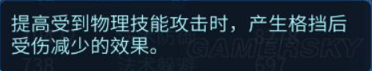
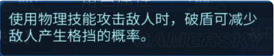
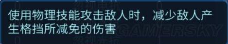

破盾与格挡
作者：[小黑猪]
下面给大家带来的是《倩女幽魂》手游破盾与格挡攻略，输出职业究竟需不需要破盾？一起看看吧。
在探讨格挡跟破盾的问题之前，我们先看4个与格挡相关的词条的描述。
- 格挡

- 格挡伤害减免

- 破盾

- 忽视格挡伤害减免

看完这4个词条的描述，我们可以很自然的将格挡与破盾划为一组，这组的数值决定了对面出格挡的概率；然后将格挡伤害减免与忽视格挡伤害减免划为一组，这组的数值，决定了对面触发格挡以后，减免的物理伤害。
再此，我必须得强调一点，破盾这词条，不要看到名字就觉得这是用来破别人防御的，其实根本与防御一点关系都没有，一个物理输出职业，绝对不会因为多了几百点破盾，而使得自己输出得到质的飞跃，破盾的作用只是非常单纯的减少格挡的概率！
经过楼主测试，可以得出以下结论：
手游的破盾，其本质就是“忽视格挡”，举个例子，如果对面格挡200，而你破盾200+，那么对面绝对不会触发格挡（此处与端游破盾不同）
当忽视格挡伤害减免词条的数值大于格挡伤害减免词条的数值，那么对面即使触发格挡，也不会产生伤害减免。举个例子，比如对面格挡200，格挡伤害减免500，而你破盾100，忽视格挡减免600，那么，就算触发了格挡，你打出去的伤害也不会减少
凡事技能描述上面写着“物理攻击”字样的，都可以触发格挡，其中异常状态的物理攻击技能，即使出格挡，也会给对面上异常状态（如刀客的心魔，偃师的锁魂等），而没有伤害的物理技能，触发格挡，则无法触发效果（如甲士的司怪、拉人、河谷等）
那么根据以上结论，我们应该如何来选择破盾属性？
首先非输出的物理职业，比如甲士，肯定多多少少都得堆点破盾，玩过甲士的童鞋应该都体验过司怪河谷被各种格挡的情况，就目前大局势来讲，虽然说走格挡的人数目前不算多，但拿单手的人，还是随处可见，还是至少将破盾弄到200多点，破掉大部分单手走大幅的职业那两百来点的格挡即可.
而对于输出来讲，我们先来看两个图
我们可以很直观的看出，破盾的数值与忽视格挡伤害减免在数值上有个3倍关系，而格挡跟格挡伤害减免上是2倍左右的关系
再考虑护腕石之灵存在有加格挡百分比的石之灵，综合可以得出结论：
输出职业的破盾是无法堆过堆格挡的人，但是在忽视格挡伤害减免的数值上却可以很容易超过堆格挡的人。
如果我们从这一点出发，只要我们的忽视格挡伤害减免足够高，就可以直接无视掉对面的格挡伤害减免。所以综合来讲，输出职业核心堆的不是破盾，而是忽视格挡减免这一词条，只是这两个词条一般成对出现，所以堆忽视格挡减免的同时，也会堆破盾，但我们修炼就可以只点忽视格挡减免，而破盾说实话，其实没什么必要点，纯属浪费银票跟帮贡